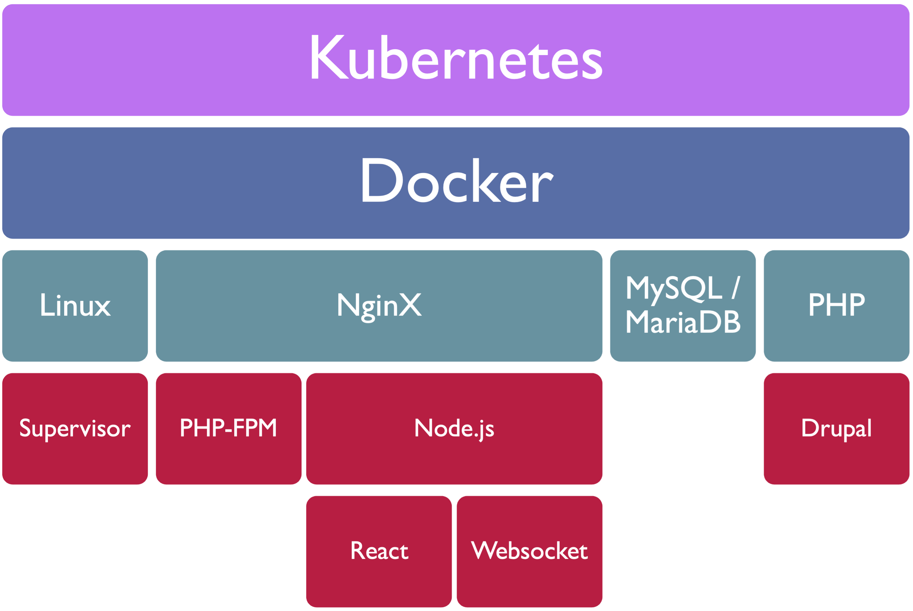
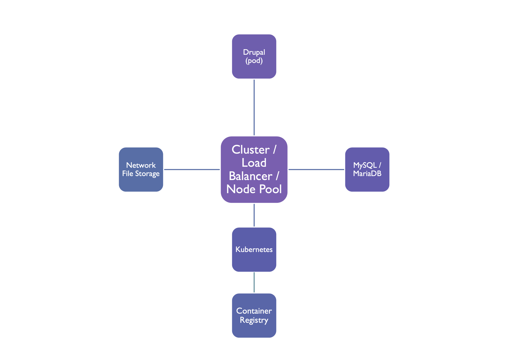
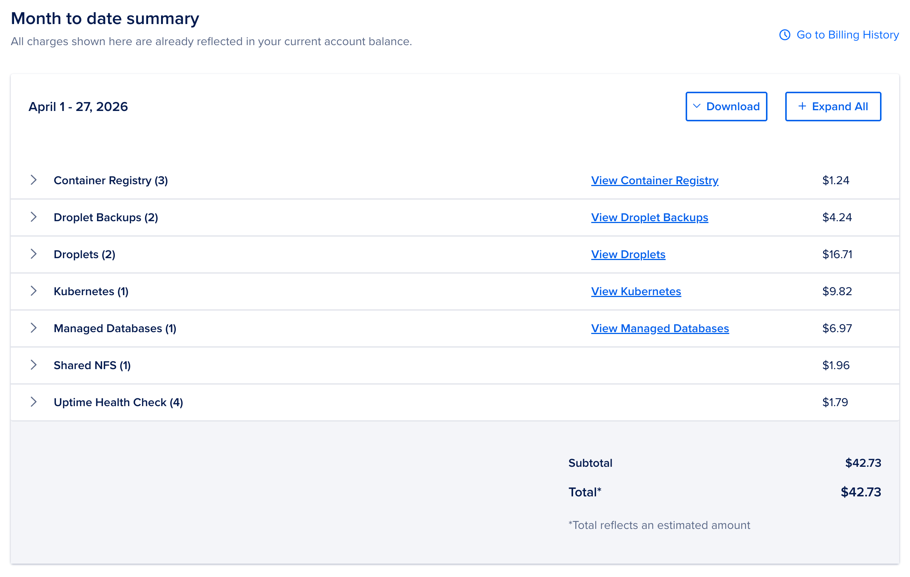

A gentle introduction for Drupal developers — Dockerfiles, local dev, and cloud deployment. No prior Kubernetes experience required.
Jordan Koplowicz

drupal image on Docker HubWe'll focus on building your own — it's not as scary as it sounds.
php:8.3-fpm-alpine is small and fast; -bookworm has more system libs availablepdo_mysql, gd, opcache, apcu; add more for your modulesdocker builddocker push localhost:5000/myappkubectl apply -fkubectl port-forwardkubectl apply -f k8s/ and you're live
files/ directory disappearspublic:// at an S3-compatible bucket — no PVC headaches, scales infinitely.
settings.php at itI've open-sourced the Dockerfile and Kubernetes manifests I use in production. Everything we've talked about today — in one repo, ready to clone.

Questions? I'll be around after the session — find me, or reach out online.